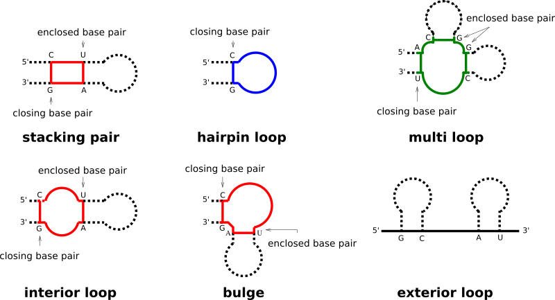
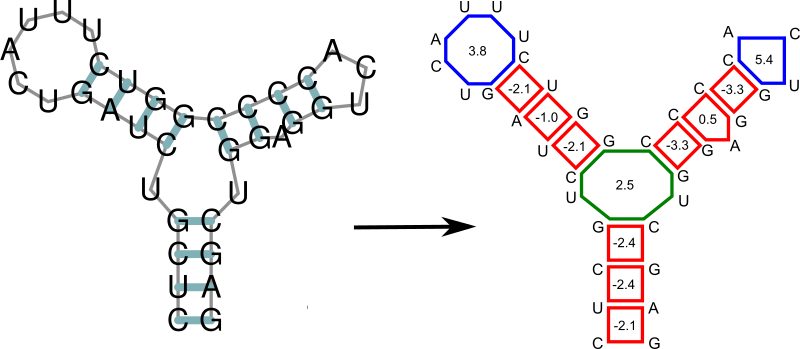

Free Energy Evaluation
Secondary structures are decomposed into individual loops to eventually evaluate their stability in terms of free energy. Here, we demonstrate how this is done and which parts of the RNAlib API are dedicated to free energy evaluation.
Specialized Modules:
Loop Decomposition
Each base pair in a secondary structure closes a loop, thereby directly enclosing unpaired nucleotides, and/or further base pairs. Our implementation distinguishes four basic types of loops:
hairpin loops
interior loops
multibranch loops
exterior loop
While the exterior loop is a special case without a closing pair, the other loops are determined by the number of base pairs involved in the loop formation, i.e. hairpin loops are 1-loops, since only a single base pair delimits the loop. interior loops are 2-loops due to their enclosing, and enclosed base pair. All loops where more than two base pairs are involved, are termed multibranch loops.
Any secondary structure can be decomposed into its loops. Each of the loops then can be scored in terms of free energy, and the free energy of an entire secondary structure is simply the sum of free energies of its loops.
Fine-tuning of the Evaluation Model
See also…